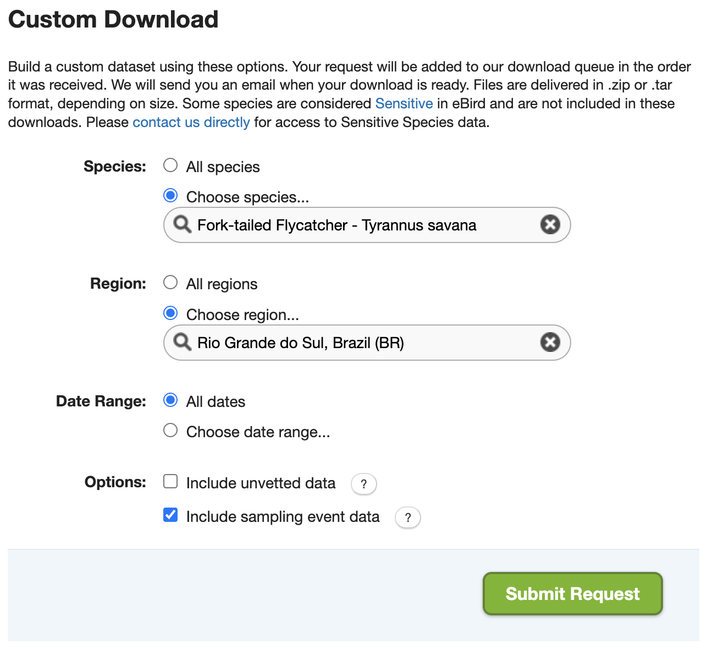
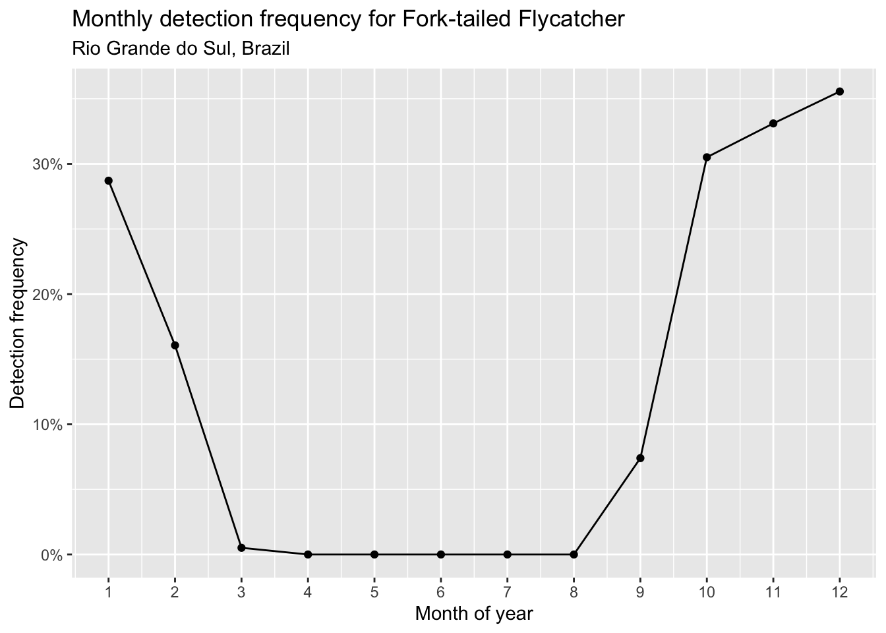
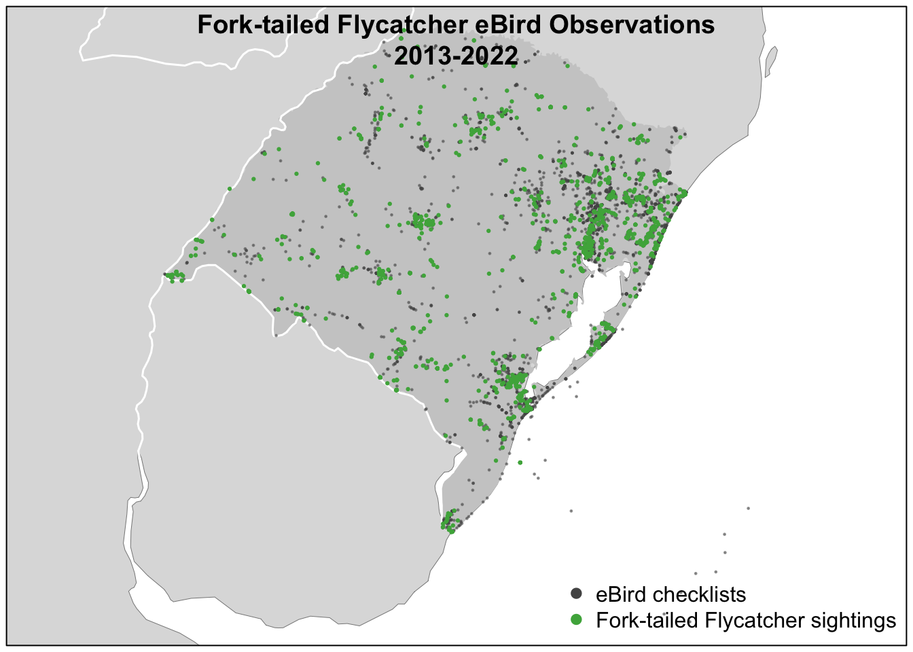

library(auk)
library(dplyr)
library(ggplot2)
library(lubridate)
library(sf)
f_sed <- "data/ebd_BR-RS_fotfly_smp_relJun-2023_sampling.txt"
checklists <- read_sampling(f_sed, unique = FALSE)
glimpse(checklists)
#> Rows: 34,005
#> Columns: 30
#> $ last_edited_date <chr> "2021-02-15 15:28:32.796728", "2021-12-12 14…
#> $ country <chr> "Brazil", "Brazil", "Brazil", "Brazil", "Bra…
#> $ country_code <chr> "BR", "BR", "BR", "BR", "BR", "BR", "BR", "B…
#> $ state <chr> "Rio Grande do Sul", "Rio Grande do Sul", "R…
#> $ state_code <chr> "BR-RS", "BR-RS", "BR-RS", "BR-RS", "BR-RS",…
#> $ county <chr> NA, NA, NA, NA, NA, NA, NA, NA, NA, NA, NA, …
#> $ county_code <chr> NA, NA, NA, NA, NA, NA, NA, NA, NA, NA, NA, …
#> $ iba_code <chr> NA, NA, NA, NA, NA, NA, NA, NA, NA, NA, NA, …
#> $ bcr_code <int> NA, NA, NA, NA, NA, NA, NA, NA, NA, NA, NA, …
#> $ usfws_code <chr> NA, NA, NA, NA, NA, NA, NA, NA, NA, NA, NA, …
#> $ atlas_block <chr> NA, NA, NA, NA, NA, NA, NA, NA, NA, NA, NA, …
#> $ locality <chr> "UFRGS--Estação Experimental Agronômica", "C…
#> $ locality_id <chr> "L10057337", "L10637103", "L10637103", "L108…
#> $ locality_type <chr> "H", "P", "P", "P", "H", "H", "H", "P", "P",…
#> $ latitude <dbl> -30.1, -28.2, -28.2, -30.4, -32.6, -31.2, -3…
#> $ longitude <dbl> -51.7, -51.7, -51.7, -51.5, -52.8, -50.8, -5…
#> $ observation_date <date> 1993-03-22, 1998-12-11, 1999-12-27, 1990-01…
#> $ time_observations_started <chr> "08:00:00", "09:00:00", "09:00:00", NA, NA, …
#> $ observer_id <chr> "obs203567", "obs1166183", "obs1166183", "ob…
#> $ sampling_event_identifier <chr> "S81646316", "S98801647", "S98802795", "S758…
#> $ protocol_type <chr> "Traveling", "Traveling", "Traveling", "Inci…
#> $ protocol_code <chr> "P22", "P22", "P22", "P20", "P20", "P62", "P…
#> $ project_code <chr> "EBIRD", "EBIRD", "EBIRD", "EBIRD", "EBIRD",…
#> $ duration_minutes <int> 195, 120, 120, NA, NA, 90, NA, 80, NA, NA, N…
#> $ effort_distance_km <dbl> 3.22, 2.00, 2.00, NA, NA, NA, NA, 4.00, NA, …
#> $ effort_area_ha <dbl> NA, NA, NA, NA, NA, NA, NA, NA, NA, NA, NA, …
#> $ number_observers <int> 2, 1, 1, NA, NA, 2, NA, 1, 1, 2, 1, 1, 1, 2,…
#> $ all_species_reported <lgl> FALSE, TRUE, TRUE, FALSE, FALSE, FALSE, FALS…
#> $ group_identifier <chr> NA, NA, NA, NA, NA, NA, NA, NA, NA, NA, NA, …
#> $ trip_comments <chr> NA, "lista feita por LB.", "lista feita por …1 Best Practices for using eBird Data
1.1 Introduction
eBird data are collected and organized around the concept of a checklist, representing observations from a single birding event, such as a 1 km walk through a park or 15 minutes observing bird feeders in your backyard. All eBird checklists contains a list of species observed and the location and time of the observations. For a subset of checklists, the observer will also provide counts of the number of individuals seen of each species, specify the amount of effort expended while collecting these data, and confirm that they are submitting a complete checklist of all the birds they were able to identify. The data provided by the checklists such as these are often referred to as semi-structured citizen science data. Importantly, complete checklists enable data users to infer counts of zero individuals for the species that were not reported. If checklists are not complete, it’s not possible to ascertain whether the absence of a species on a list was a non-detection or the result of a participant not recording the species.
Let’s compare two eBird checklists: an incidental observation with missing counts and a complete traveling count. Both checklists can be useful, but only the second checklist provides the type of semi-structured data required for more rigorous applications.
1.2 Downloading data
eBird data are released as two tab-separated text files: the eBird Basic Dataset (EBD) containing observation data and the Sampling Event Data (SED) containing checklist data. These files are released monthly and contain all validated bird sightings in the eBird database at the time of release. In the EBD, each row corresponds to the sighting of a single species on a checklist, including the count and any other species-level information (e.g. age, sex, species comments, etc.). In the SED, each row corresponds to a checklist, including the date, time, location, effort (e.g. distance traveled, time spent, etc.), and any additional checklist-level information (e.g. whether this is a complete checklist or not).
In this workshop, we’ll use Fork-tailed Flycatcher observations from Rio Grande do Sul, Brazil as an example. We’ll start by downloading the corresponding eBird observation (EBD) and checklist (SED) data by visiting the eBird Basic Dataset download page and filling out the Custom Download form to request Fork-tailed Flycatcher observations from Rio Grande do Sul. Make sure you check the box “Include sampling event data”, which will include the SED in the data download in addition to the EBD.

Tip
The eBird database contains a massive amount of data! When requesting eBird data to download it’s important to narrow the request to as small a subset of the data as possible. For example, if we request all Fork-tailed Flycatcher observations globally, the dataset may be too large to work with in R. Instead, we’ve only requested data for a single state in Brazil.
Once the data are ready, you will receive an email with a download link. The downloaded data will be in a compressed .zip format, and should be unarchived. The resulting directory will contain a two text files: one for the EBD (e.g. ebd_BR-RS_fotfly_smp_relJun-2023.txt) containing all the Fork-tailed flycatcher observations from Rio Grande do Sul, and one for the SED (e.g. ebd_BR-RS_fotfly_smp_relJun-2023_sampling.txt) containing all checklists from Rio Grande do Sul, The relJune-2023 component of the file name describes which version of the EBD this dataset came from; in this case it’s the June 2023 release.
If you would prefer to directly download the exact dataset used in this workshop, download the data package for this workshop.
1.3 Importing eBird data into R
The previous step left us with two tab separated text files, one for the EBD (i.e. observation data) and one for the SED (i.e. checklist data). Start a new RStudio project and put the downloaded text files in the data/ sub-directory of the project directory.
The auk R package is specifically designed for working with eBird data. It includes the functions read_ebd() and read_sampling() for importing the EBD and SED, respectively, into R. First let’s import the checklist data (SED).
Checkpoint
Take some time to explore the variables in the checklist dataset. If you’re unsure about any of the variables, consult the metadata document that came with the data download (eBird_Basic_Dataset_Metadata_v1.14.pdf).
Next, let’s import the observation data.
f_ebd <- "data/ebd_BR-RS_fotfly_smp_relJun-2023.txt"
observations <- read_ebd(f_ebd, unique = FALSE, rollup = FALSE)
glimpse(observations)
#> Rows: 4,810
#> Columns: 49
#> $ global_unique_identifier <chr> "URN:CornellLabOfOrnithology:EBIRD:OBS10006…
#> $ last_edited_date <chr> "2023-05-11 20:08:09.920625", "2022-08-04 0…
#> $ taxonomic_order <dbl> 17062, 17062, 17062, 17062, 17062, 17062, 1…
#> $ category <chr> "species", "species", "species", "species",…
#> $ taxon_concept_id <chr> "avibase-A2510EF4", "avibase-A2510EF4", "av…
#> $ common_name <chr> "Fork-tailed Flycatcher", "Fork-tailed Flyc…
#> $ scientific_name <chr> "Tyrannus savana", "Tyrannus savana", "Tyra…
#> $ subspecies_common_name <chr> NA, NA, NA, NA, NA, NA, NA, NA, NA, NA, NA,…
#> $ subspecies_scientific_name <chr> NA, NA, NA, NA, NA, NA, NA, NA, NA, NA, NA,…
#> $ exotic_code <lgl> NA, NA, NA, NA, NA, NA, NA, NA, NA, NA, NA,…
#> $ observation_count <chr> "X", "1", "4", "1", "X", "X", "X", "X", "X"…
#> $ breeding_code <chr> NA, NA, NA, NA, NA, NA, NA, NA, NA, NA, NA,…
#> $ breeding_category <chr> NA, NA, NA, NA, NA, NA, NA, NA, NA, NA, NA,…
#> $ behavior_code <chr> NA, NA, NA, NA, NA, NA, NA, NA, NA, NA, NA,…
#> $ age_sex <chr> NA, NA, NA, NA, NA, NA, NA, NA, NA, NA, NA,…
#> $ country <chr> "Brazil", "Brazil", "Brazil", "Brazil", "Br…
#> $ country_code <chr> "BR", "BR", "BR", "BR", "BR", "BR", "BR", "…
#> $ state <chr> "Rio Grande do Sul", "Rio Grande do Sul", "…
#> $ state_code <chr> "BR-RS", "BR-RS", "BR-RS", "BR-RS", "BR-RS"…
#> $ county <chr> NA, NA, NA, NA, NA, NA, NA, NA, NA, NA, NA,…
#> $ county_code <chr> NA, NA, NA, NA, NA, NA, NA, NA, NA, NA, NA,…
#> $ iba_code <chr> NA, NA, NA, NA, NA, NA, NA, NA, NA, NA, NA,…
#> $ bcr_code <int> NA, NA, NA, NA, NA, NA, NA, NA, NA, NA, NA,…
#> $ usfws_code <chr> NA, NA, NA, NA, NA, NA, NA, NA, NA, NA, NA,…
#> $ atlas_block <chr> NA, NA, NA, NA, NA, NA, NA, NA, NA, NA, NA,…
#> $ locality <chr> "São Francisco de Paula--listas históricas …
#> $ locality_id <chr> "L2862103", "L2453957", "L2312691", "L23126…
#> $ locality_type <chr> "H", "H", "P", "P", "P", "P", "P", "H", "H"…
#> $ latitude <dbl> -29.4, -31.3, -29.4, -29.4, -29.7, -28.2, -…
#> $ longitude <dbl> -50.6, -51.0, -50.6, -50.6, -50.0, -51.7, -…
#> $ observation_date <date> 1993-11-06, 1996-09-28, 1996-10-17, 1996-1…
#> $ time_observations_started <chr> NA, "07:00:00", "15:00:00", "06:00:00", NA,…
#> $ observer_id <chr> "obsr477997", "obsr556494", "obsr293781", "…
#> $ sampling_event_identifier <chr> "S75217442", "S28837996", "S14886987", "S14…
#> $ protocol_type <chr> "Historical", "Historical", "Traveling", "T…
#> $ protocol_code <chr> "P62", "P62", "P22", "P22", "P20", "P22", "…
#> $ project_code <chr> "EBIRD", "EBIRD", "EBIRD", "EBIRD", "EBIRD"…
#> $ duration_minutes <int> NA, 720, 120, 480, NA, 120, NA, NA, NA, 120…
#> $ effort_distance_km <dbl> NA, NA, 1.61, 6.44, NA, 2.00, NA, NA, NA, 2…
#> $ effort_area_ha <dbl> NA, NA, NA, NA, NA, NA, NA, NA, NA, NA, NA,…
#> $ number_observers <int> NA, 2, 12, 12, 1, 1, 1, 2, 1, 1, 8, 8, 2, 2…
#> $ all_species_reported <lgl> TRUE, TRUE, TRUE, TRUE, FALSE, TRUE, TRUE, …
#> $ group_identifier <chr> NA, NA, NA, NA, NA, NA, NA, NA, NA, NA, NA,…
#> $ has_media <lgl> FALSE, FALSE, FALSE, FALSE, FALSE, FALSE, F…
#> $ approved <lgl> TRUE, TRUE, TRUE, TRUE, TRUE, TRUE, TRUE, T…
#> $ reviewed <lgl> FALSE, FALSE, FALSE, FALSE, FALSE, FALSE, F…
#> $ reason <chr> NA, NA, NA, NA, NA, NA, NA, NA, NA, NA, NA,…
#> $ trip_comments <chr> NA, NA, "Victor Emanuel Nature Tours birdin…
#> $ species_comments <chr> NA, NA, NA, NA, NA, NA, NA, NA, NA, NA, NA,…
Checkpoint
Take some time to explore the variables in the observation dataset. Notice that the EBD duplicates many of the checklist-level variables from the SED.
When we read the data into R, we used unique = FALSE and rollup = FALSE. By default the read functions in auk perform two important pre-processing steps: combining duplicate shared checklists and taxonomic rollup. We intentionally turned off this functionality for the purposes of demonstration.
1.3.2 Taxonomic rollup
eBird observations can be made at levels below species (e.g. subspecies) or above species (e.g. a bird that was identified as a duck, but the species could not be determined); however, for most uses we’ll want observations at the species level. This is especially true if we want to produce detection/non-detection data from complete checklists because “complete” only applies at the species level.
Tip
In the example dataset used for this workshop, these taxonomic issues don’t apply. We have requested Fork-tailed Flycatcher observations, so we haven’t received any observations for taxa above species, and Fork-tailed Flycatcher only has a single subspecies within Rio Grande do Sul. However, in many other situations, these taxonomic issues can be important. For example, this checklist has 10 Yellow-rumped Warblers, 5 each of two Yellow-rumped Warbler subspecies, and one hybrid between the two subspecies. auk_rollup() will combine all four of these observations into a single Yellow-rumped Warbler observation.
The function auk_rollup() drops all observations not identifiable to a species and rolls up all observations reported below species to the species level.
observations_rollup <- auk_rollup(observations)
# only one checklist is affected by this
observations %>%
filter(sampling_event_identifier == "S99335111") %>%
select(sampling_event_identifier, common_name, subspecies_common_name,
observation_count)
#> # A tibble: 2 × 4
#> sampling_event_identifier common_name subspecies_common_name observation_count
#> <chr> <chr> <chr> <chr>
#> 1 S99335111 Fork-taile… <NA> X
#> 2 S99335111 Fork-taile… Fork-tailed Flycatche… 1
observations_rollup %>%
filter(sampling_event_identifier == "S99335111") %>%
select(sampling_event_identifier, common_name,
observation_count)
#> # A tibble: 1 × 3
#> sampling_event_identifier common_name observation_count
#> <chr> <chr> <chr>
#> 1 S99335111 Fork-tailed Flycatcher X
Tip
If multiple taxa on a single checklist roll up to the same species, auk_rollup() attempts to combine them intelligently. If each observation has a count, those counts are added together, but if any of the observations is missing a count (i.e. the count is “X”) the combined observation is also assigned an “X”. In the example checklist from the previous tip, with four taxa all rolling up to Yellow-rumped Warbler, auk_rollup() will add the four counts together to get 21 Yellow-rumped Warblers (10 + 5 + 5 + 1).
1.4 Generating detection/non-detection data
Complete eBird checklists are extremely valuable because, for all species that weren’t reported, we can infer counts of 0. This allows us to convert eBird from presence only data to detection/non-detection data, which allows for much more robust analyses. Note that we don’t use the term presence/absence data here because a non-detection doesn’t necessarily imply the species was absent, only that the observer didn’t detect and identify it.
We refer to the process of producing detection/non-detection data as “zero-filling” the eBird data because we’re filling in the missing zeros. We’ll read the eBird data into R again, filter to only complete checklists, then use the function auk_zerofill() to generate detection/non-detection data. Note that shared checklists are combined and taxonomic rollup is performed by default when using the read_*() functions from auk.
# import checklist data
checklists <- read_sampling(f_sed) %>%
# subset to complete checklists
filter(all_species_reported)
# import observation data
observations <- read_ebd(f_ebd) %>%
# subset to complete checklists
filter(all_species_reported)
# zero-fill to produce detection/non-detection data
zf <- auk_zerofill(observations, checklists, collapse = TRUE)
glimpse(zf)
#> Rows: 22,838
#> Columns: 38
#> $ checklist_id <chr> "S98801647", "S98802795", "S91164181", "S114…
#> $ last_edited_date <chr> "2021-12-12 14:52:43.115062", "2022-10-25 03…
#> $ country <chr> "Brazil", "Brazil", "Brazil", "Brazil", "Bra…
#> $ country_code <chr> "BR", "BR", "BR", "BR", "BR", "BR", "BR", "B…
#> $ state <chr> "Rio Grande do Sul", "Rio Grande do Sul", "R…
#> $ state_code <chr> "BR-RS", "BR-RS", "BR-RS", "BR-RS", "BR-RS",…
#> $ county <chr> NA, NA, NA, NA, NA, NA, NA, NA, NA, NA, NA, …
#> $ county_code <chr> NA, NA, NA, NA, NA, NA, NA, NA, NA, NA, NA, …
#> $ iba_code <chr> NA, NA, NA, NA, NA, NA, NA, NA, NA, NA, NA, …
#> $ bcr_code <int> NA, NA, NA, NA, NA, NA, NA, NA, NA, NA, NA, …
#> $ usfws_code <chr> NA, NA, NA, NA, NA, NA, NA, NA, NA, NA, NA, …
#> $ atlas_block <chr> NA, NA, NA, NA, NA, NA, NA, NA, NA, NA, NA, …
#> $ locality <chr> "Capela Sagrado Coração de Jesus,RS,BR", "Ca…
#> $ locality_id <chr> "L10637103", "L10637103", "L15616802", "L165…
#> $ locality_type <chr> "P", "P", "P", "P", "H", "P", "P", "P", "P",…
#> $ latitude <dbl> -28.2, -28.2, -29.3, -29.3, -29.5, -29.3, -3…
#> $ longitude <dbl> -51.7, -51.7, -49.7, -49.7, -50.6, -50.3, -5…
#> $ observation_date <date> 1998-12-11, 1999-12-27, 1989-12-27, 1992-04…
#> $ time_observations_started <chr> "09:00:00", "09:00:00", "07:30:00", NA, NA, …
#> $ observer_id <chr> "obs1166183", "obs1166183", "obs501289", "ob…
#> $ sampling_event_identifier <chr> "S98801647", "S98802795", "S91164181", "S114…
#> $ protocol_type <chr> "Traveling", "Traveling", "Traveling", "Hist…
#> $ protocol_code <chr> "P22", "P22", "P22", "P62", "P62", "P22", "P…
#> $ project_code <chr> "EBIRD", "EBIRD", "EBIRD", "EBIRD", "EBIRD",…
#> $ duration_minutes <int> 120, 120, 80, NA, NA, 180, NA, NA, 120, 480,…
#> $ effort_distance_km <dbl> 2.000, 2.000, 4.000, NA, NA, 5.000, NA, NA, …
#> $ effort_area_ha <dbl> NA, NA, NA, NA, NA, NA, NA, NA, NA, NA, NA, …
#> $ number_observers <int> 1, 1, 1, 1, 2, 1, 3, 3, 12, 12, 12, 2, 1, NA…
#> $ all_species_reported <lgl> TRUE, TRUE, TRUE, TRUE, TRUE, TRUE, TRUE, TR…
#> $ group_identifier <chr> NA, NA, NA, NA, NA, NA, NA, NA, NA, NA, NA, …
#> $ trip_comments <chr> "lista feita por LB.", "lista feita por LB."…
#> $ scientific_name <chr> "Tyrannus savana", "Tyrannus savana", "Tyran…
#> $ breeding_code <chr> NA, NA, NA, NA, NA, NA, NA, NA, NA, NA, NA, …
#> $ breeding_category <chr> NA, NA, NA, NA, NA, NA, NA, NA, NA, NA, NA, …
#> $ behavior_code <chr> NA, NA, NA, NA, NA, NA, NA, NA, NA, NA, NA, …
#> $ age_sex <chr> NA, NA, NA, NA, NA, NA, NA, NA, NA, NA, NA, …
#> $ observation_count <chr> "X", "X", "0", "0", "0", "0", "0", "0", "4",…
#> $ species_observed <lgl> TRUE, TRUE, FALSE, FALSE, FALSE, FALSE, FALS…The observation_count variable has true counts as well as “X”s, which indicate that the species was detected but the number of individuals was not counted. auk_zerofill() adds a new binary column, species_observed, indicating whether or not the species was detected.
select(zf, observation_count, species_observed) %>%
head(10)
#> # A tibble: 10 × 2
#> observation_count species_observed
#> <chr> <lgl>
#> 1 X TRUE
#> 2 X TRUE
#> 3 0 FALSE
#> 4 0 FALSE
#> 5 0 FALSE
#> 6 0 FALSE
#> # ℹ 4 more rowsLet’s convert the “X”s to NAs and transform observation_count to an integer variable.
zf$observation_count <- if_else(zf$observation_count == "X",
NA_character_, zf$observation_count) %>%
as.integer()
select(zf, observation_count, species_observed) %>%
head(10)
#> # A tibble: 10 × 2
#> observation_count species_observed
#> <int> <lgl>
#> 1 NA TRUE
#> 2 NA TRUE
#> 3 0 FALSE
#> 4 0 FALSE
#> 5 0 FALSE
#> 6 0 FALSE
#> # ℹ 4 more rows1.5 Filtering data
Now that you have a detection/non-detection dataset, it’s likely that you want to do something with it. For example, you may want to make a map, identify priority areas for a species, or train a species distribution model. Regardless of the specific application, it’s likely that some amount of filtering of the data is required first. Some of the ways you may want to filter eBird data include:
- Temporal filtering: filter the data to a specific range of years or to a specific time of year.
- Spatial filtering: filter the data to focus on a specific region, e.g. a protected area.
- Increasing precision: some eBird checklists are quite long in distance or duration leading to spatial or temporal imprecision. By removing longer checklists we can increase the spatial precision of the dataset.
- Reducing variation in effort: unlike structured scientific surveys, data can be submitted to eBird using a variety of protocols and there is significant variation in effort between checklists in the eBird dataset. Variation in protocol and effort leads to variation in detectability (more effort generally leads to higher detectability). We can choose to impose more structure on the eBird dataset by filtering to reduce variation in protocol and effort.
The specific filtering you apply will depend on how you intend to use the eBird data. However, for the sake of this example, let’s filter the eBird data to only traveling and stationary checklists from 2013-2022 that are less than 6 hours in duration and 10 km in length.
zf_filtered <- zf %>%
filter(year(observation_date) >= 2013, year(observation_date) <= 2022,
protocol_type %in% c("Traveling", "Stationary"),
duration_minutes < 6 * 60,
effort_distance_km < 10 | protocol_type == "Stationary")
nrow(zf)
#> [1] 22838
nrow(zf_filtered)
#> [1] 16526We reduced the number of checklists by 6,312, but the checklists remaining are of higher quality.
Finally, many of the columns in this data frame are unnecessary or redundant, so we’ll select only the columns we need.
checklists_zf <- zf_filtered %>%
select(checklist_id,
latitude, longitude,
observation_date, time_observations_started,
protocol_type,
duration_minutes, effort_distance_km, number_observers,
observation_count, species_observed)1.6 Applications
1.6.1 Detection frequency
The simplest thing we can do with these eBird observations is estimate the frequency of detection of Fork-tailed Flycatcher within Rio Grande do Sul. This is the proportion of eBird checklists in the region that detected the species. species_observed is a binary TRUE/FALSE column indicating if a species was detected and R treats TRUE as 1 and FALSE as 0, so we can take the average of this column to get the detection frequency.
mean(checklists_zf$species_observed)
#> [1] 0.15So, Fork-tailed Flycatcher is fairly common within this region with 15% of checklists detecting the species. Detection frequency can be used to compare the prevalence of a species between regions or over time. For example, Fork-tailed Flycatcher is migratory, so let’s look at how detection frequency changes over the months of the year.
monthly_detection <- checklists_zf %>%
mutate(month = month(observation_date)) %>%
group_by(month) %>%
summarize(detection_frequency = mean(species_observed))
# plot monthly detection frequency
ggplot(monthly_detection) +
aes(x = month, y = detection_frequency) +
geom_line() +
geom_point() +
scale_x_continuous(breaks = 1:12) +
scale_y_continuous(labels = scales::percent) +
labs(x = "Month of year",
y = "Detection frequency",
title = "Monthly detection frequency for Fork-tailed Flycatcher",
subtitle = "Rio Grande do Sul, Brazil")
Based on this chart, Fork-tailed Flycatcher appears to arrive in Rio Grande do Sul in September and depart in February.
1.6.2 Converting to spatial format
Many applications of eBird data require converting the data into an explicitly spatial format, for example, to make a map or subset the observations to only those within a polygon for a protected area. The R package sf can be use to represent spatial points, lines, and polygons in R. We can convert the data frame of checklists to an sf object using the latitude and longitude.
checklists_sf <- st_as_sf(checklists_zf, coords = c("longitude", "latitude"),
# 4326 is the code for an unprojected lon/lat
# coordiante reference system
crs = 4326)
print(checklists_sf)
#> Simple feature collection with 16526 features and 9 fields
#> Geometry type: POINT
#> Dimension: XY
#> Bounding box: xmin: -57.6 ymin: -35 xmax: -48.7 ymax: -27.1
#> Geodetic CRS: WGS 84
#> # A tibble: 16,526 × 10
#> checklist_id observation_date time_observations_started protocol_type
#> * <chr> <date> <chr> <chr>
#> 1 S117444976 2013-05-18 07:47:00 Traveling
#> 2 S117215031 2013-04-14 07:53:00 Traveling
#> 3 S53740464 2013-01-11 08:00:00 Traveling
#> 4 S16023053 2013-12-14 17:30:00 Stationary
#> 5 S15844084 2013-12-03 13:00:00 Traveling
#> 6 S117214399 2013-03-16 07:36:00 Traveling
#> # ℹ 16,520 more rows
#> # ℹ 6 more variables: duration_minutes <int>, effort_distance_km <dbl>,
#> # number_observers <int>, observation_count <int>, species_observed <lgl>,
#> # geometry <POINT [°]>Imagine that we’re only interested in observations from within 50 km of Gramado, Brazil (29.375°S, 50.876°W). We can use sf to generate a circle of radium 50 km centered on Gramado, then subset observations to only those falling within the circle.
gramado_point <- st_sfc(st_point(c(-50.876, -29.375)), crs = 4326)
# 50km = 50,000m
gramado_circle <- st_buffer(gramado_point, dist = 50000)
checklists_gramado <- checklists_sf[gramado_circle, ]We could now, for example, calculate the detection frequency in the area around Gramado.
mean(checklists_gramado$species_observed)
#> [1] 0.097Finally, in many cases, it may be more convenient to work with eBird data outside of R in a GIS such as QGIS, a free and open source GIS. We can export the Fork-tailed Flycatcher observations to a GeoPackage using sf.
write_sf(checklists_sf, "data/fotfly-ebird_br-rs.gpkg",
layer = "fotfly_observations")
Tip
The GeoPackage is a modern, open source alternative to the shapefile format for storing spatial data. GeoPackages avoid many of the problems and limitations associated with shapefiles, and they are much more efficient than shapefiles. The online ArcGIS documentation provides instructions for how to open a GeoPackage in ArcGIS.
1.6.3 Mapping
Now that we have the data in a spatial format, we can produce a map of the Fork-tailed Flycatcher detection/non-detection data. For complex, highly customized maps, we recommend using a GIS such as QGIS that’s specifically designed for cartography. However, it is possible to make a quick, simple map in R.
We’ll start by loading polygons defining coutry and state borders, which will provide contextual information for our map. These polygons come from Natural Earth, and excellent source of global, attribution free spatial data. The R package rnaturalearth provides access to Natural Earth data within R; however, for convenience we’ve provided the necessary layers in the file data/gis-data.gpkg included in the data package for this workshop. We’ll also project everything to an equal area projection center on Rio Grande do Sul.
crs <- st_crs("+proj=laea +lat_0=-30 +lon_0=-50")
# polygons from natural earth
ne_land <- read_sf("data/gis-data.gpkg", "ne_land") %>%
st_transform(crs = crs)
ne_country_lines <- read_sf("data/gis-data.gpkg", "ne_country_lines") %>%
st_transform(crs = crs)
rgds_boundary <- read_sf("data/gis-data.gpkg", "ne_states") %>%
filter(state_code == "BR-RS") %>%
st_transform(crs = crs)
# transform ebird data to equal area projection
checklists_proj <- st_transform(checklists_sf, crs = crs)Now we can make a map of observations of Fork-tailed Flycatcher in Rio Grande do Sul. We build up the map in layers, first creating a basemap with the Natural Earth polygons, then plotting the eBird detection and non-detection data on top. When building up a map in layes like this, it’s often useful to first plot a blank version the main dataset you intend to map to define the spatial extent of the map, then layer everything else on top, finishing with plotting the data a second time so it appears as the top layer.
par(mar = c(0.25, 0.25, 2, 0.25))
# start with a blank plot of the data to define the spatial extent of the map
plot(st_geometry(checklists_proj), col = NA)
# contextual gis data
plot(ne_land, col = "#dddddd", border = "#888888", lwd = 0.5, add = TRUE)
plot(rgds_boundary, col = "#cccccc", border = NA, add = TRUE)
#> Warning in plot.sf(rgds_boundary, col = "#cccccc", border = NA, add = TRUE):
#> ignoring all but the first attribute
plot(ne_country_lines, col = "#ffffff", lwd = 1.5, add = TRUE)
# ebird observations
# not detected
plot(filter(checklists_proj, !species_observed),
pch = 19, cex = 0.2, col = alpha("#555555", 0.5),
add = TRUE)
#> Warning in plot.sf(filter(checklists_proj, !species_observed), pch = 19, :
#> ignoring all but the first attribute
# detected
plot(filter(checklists_proj, species_observed),
pch = 19, cex = 0.3, col = alpha("#4daf4a", 1),
add = TRUE)
#> Warning in plot.sf(filter(checklists_proj, species_observed), pch = 19, :
#> ignoring all but the first attribute
# legend
legend("bottomright", bty = "n",
col = c("#555555", "#4daf4a"),
legend = c("eBird checklists", "Fork-tailed Flycatcher sightings"),
pch = 19)
box()
title("Fork-tailed Flycatcher eBird Observations (2013-2022)")